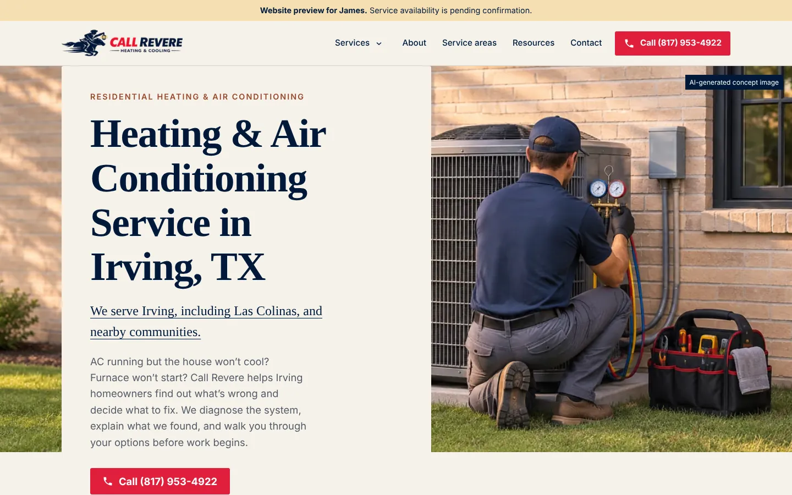
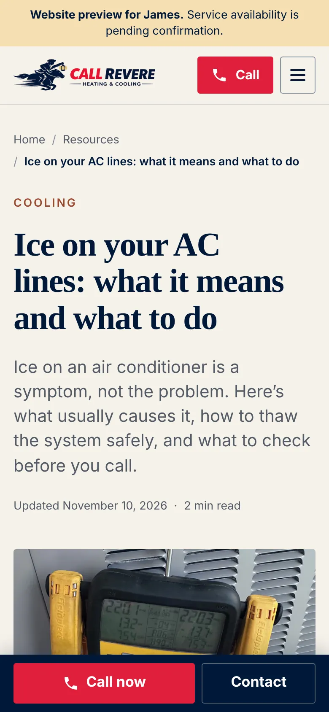
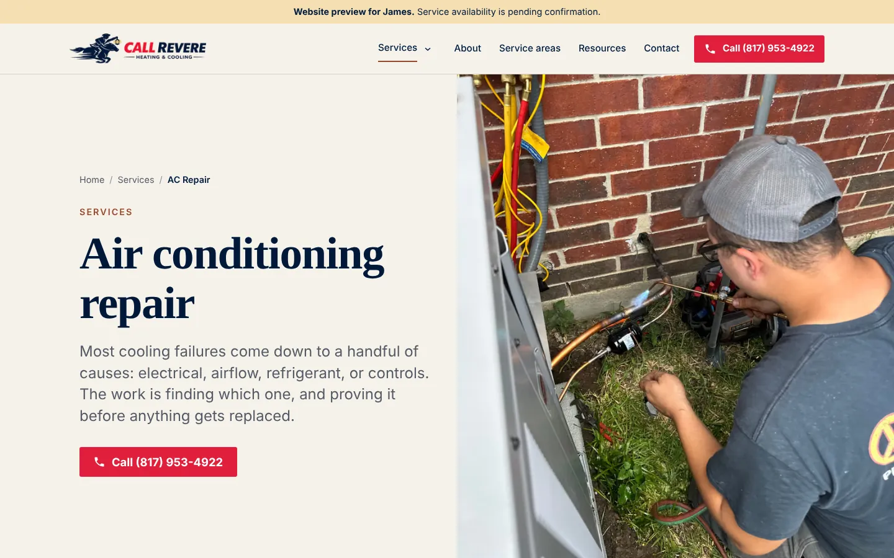

Call Revere
Connecting what's wrong at home to the right page and a phone call
Call Revere is a residential heating and air company serving Irving and nearby communities. When someone's AC quits in August, they aren't browsing. They're searching for what's wrong and who can fix it nearby. The redesign is built around that moment.
- Industry
- Residential heating and air
- Location
- Irving, Texas
- Status
- Redesign previewRedesign preview. Service availability is still being confirmed with the owner.
- What I did
- Local SEO structure, Service pages, Symptom guides, Custom design

The business goal
Get the right homeowner to call. For a heating and air company, that means showing up when people search for a symptom ("ice on AC lines," "furnace won't turn on") or a service in their city, then making it easy to understand the problem and pick up the phone.
The business also has a point of view worth leading with: it explains what it found and walks you through your options before work begins, and it offers a free second opinion if you've been quoted a major repair or replacement.
What homeowners need to see and do
- Call, immediately, from a phone. The phone number is in the header on every page and in a call bar fixed to the bottom of the mobile screen.
- Confirm they're in the service area. The homepage says "Irving, including Las Colinas, and nearby communities" in the first lines.
- Do something useful while they wait. "Five things worth checking first" covers safe checks (thermostat, breakers, filter, outdoor unit, ice) and when to stop and call right away, such as smelling gas.
- Know what a visit involves. A three-step "What to expect on a service call" section.
Service, city, and symptom pages
The site is organized around the three ways people actually look for HVAC help, and the pages are connected so a visitor (or a search engine) can follow the thread.
Service pages cover each kind of job: AC Repair, Heating & Furnace Service, HVAC Installation, HVAC Maintenance, and Second Opinions. Each page explains what usually causes the problem, what the visit involves, and how to call.
Symptom guides answer the question a homeowner types before they know what service they need: "Ice on your AC lines: what it means and what to do" and "Furnace won't turn on? Safe checks before you call." Each guide links to the service that fixes the problem, and the matching service page links back to the guide. Someone who arrives with a symptom lands on a useful answer, then has a one-tap path to the right service and the phone.

City and service-area pages connect those services to place. Irving is named in the homepage title and headline, and a Service Areas page lists the communities served (Irving, Las Colinas, Coppell, Farmers Branch, Grand Prairie, Euless, Bedford, and Grapevine) with what to have ready when you call. The service area is still being confirmed with the owner, so the areas live on one page for now. Separate city pages only make sense once each area is confirmed, because a page for a city you don't actually serve does more harm than good.
Every page below the homepage carries breadcrumb structured data, so search engines can see where it sits in the site.

Why these choices
Navy, cream, and a red call button. The deep navy and cream feel established and trustworthy. Red is used for one job only, the call to action, so the eye always finds the phone number.
Plain explanations instead of sales language. The copy describes problems the way a technician would explain them at the kitchen table: what's probably going on, what to check, and what a repair involves.
Honest labels. The homepage hero image is a concept image and says so on the image. The preview banner notes that service availability is pending confirmation.

Where it stands
This is a redesign preview for the owner's review. Service areas and availability are being confirmed before launch.